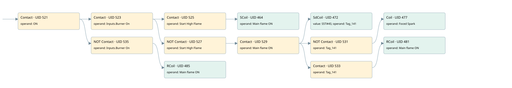

enable relay forceed spark
burner control · 검색 색인 순서 10 · 원본 내부 NID 추정 9
백업 PLF 원본의 2688129 바이트 위치에서 복원한 XML. 검색 문서 1863의 객체 키 16102200dd10000000000000와 연결했다. 이름 해석 14/14개. 남은 RefId는 상수 또는 미해석 참조다.
연결 구조 다시 그리기
원본 Part/PCon/Wire를 이용한 연결도다. TIA 화면의 래더 배치 또는 실행 결과를 재현한 그림은 아니다. 핀 연결은 아래 표와 원본 XML을 기준으로 읽는다. 노드 위에 마우스를 두면 피연산자 이름을 볼 수 있다.

접점·코일·블록과 피연산자
| Part UID | Gate | Negated 핀 | 연결 피연산자 |
|---|---|---|---|
| 521 | Contact | operand = ON | |
| 523 | Contact | operand = Inputs.Burner On | |
| 525 | Contact | operand = Start High Flame | |
| 464 | SCoil | operand = Main flame ON | |
| 527 | Contact | operand | operand = Start High Flame |
| 529 | Contact | operand = Main flame ON | |
| 472 | SdCoil | value = S5T#4S; operand = Tag_141 | |
| 531 | Contact | operand | operand = Tag_141 |
| 477 | Coil | operand = Foced Spark | |
| 533 | Contact | operand = Tag_141 | |
| 481 | RCoil | operand = Main flame ON | |
| 535 | Contact | operand | operand = Inputs.Burner On |
| 485 | RCoil | operand = Main flame ON |
접점 경로를 펼친 조건식
Contact·O/A·비교기의 원본 연결을 읽기 쉽게 펼친 보조 해석이다. POWER는 전원 레일 시작을 뜻한다. 호출 블록·에지·타이머의 내부 동작과 다중 쓰기 순서는 이 표로 실행 검증하지 않았다. 미해석 핀과 RefId는 원문 연결표에서 확인한다.
| UID | 동작 | 대상 | 원본 접점 경로 | 내용 |
|---|---|---|---|---|
| 464 | SCoil | Main flame ON | ((ON AND Inputs.Burner On) AND Start High Flame) | 조건 성립 시 Set |
| 472 | SdCoil | Tag_141 | (((ON AND Inputs.Burner On) AND NOT [Start High Flame]) AND Main flame ON) | 시간 동작 SdCoil; 타이머 의미 추가 확인 / 시간 인자 S5T#4S |
| 477 | Coil | Foced Spark | ((((ON AND Inputs.Burner On) AND NOT [Start High Flame]) AND Main flame ON) AND NOT [Tag_141]) | 조건에 따른 Coil 기록 |
| 481 | RCoil | Main flame ON | ((((ON AND Inputs.Burner On) AND NOT [Start High Flame]) AND Main flame ON) AND Tag_141) | 조건 성립 시 Reset |
| 485 | RCoil | Main flame ON | (ON AND NOT [Inputs.Burner On]) | 조건 성립 시 Reset |
원본 배선 연결
| Wire UID | 동일 Wire 연결 끝점 |
|---|---|
| 537 | Powerrail {} ↔ Part 521.in |
| 500 | ORef 486 (ON) ↔ Part 521.operand |
| 522 | Part 521.out ↔ Part 523.in ↔ Part 535.in |
| 501 | ORef 487 (Inputs.Burner On) ↔ Part 523.operand |
| 524 | Part 523.out ↔ Part 525.in ↔ Part 527.in |
| 502 | ORef 488 (Start High Flame) ↔ Part 525.operand |
| 526 | Part 525.out ↔ Part 464.in |
| 504 | ORef 489 (Main flame ON) ↔ Part 464.operand |
| 505 | ORef 490 (Start High Flame) ↔ Part 527.operand |
| 528 | Part 527.out ↔ Part 529.in |
| 506 | ORef 491 (Main flame ON) ↔ Part 529.operand |
| 530 | Part 529.out ↔ Part 472.in ↔ Part 531.in ↔ Part 533.in |
| 507 | ORef 492 (S5T#4S) ↔ Part 472.value |
| 508 | ORef 493 (Tag_141) ↔ Part 472.operand |
| 509 | ORef 494 (Tag_141) ↔ Part 531.operand |
| 532 | Part 531.out ↔ Part 477.in |
| 511 | ORef 495 (Foced Spark) ↔ Part 477.operand |
| 512 | ORef 496 (Tag_141) ↔ Part 533.operand |
| 534 | Part 533.out ↔ Part 481.in |
| 514 | ORef 497 (Main flame ON) ↔ Part 481.operand |
| 517 | ORef 498 (Inputs.Burner On) ↔ Part 535.operand |
| 536 | Part 535.out ↔ Part 485.in |
| 519 | ORef 499 (Main flame ON) ↔ Part 485.operand |
식별자 해석 근거 14개
| ORef UID | RefId | 이름 | IdentXmlPart 파일 | 해석 방법 |
|---|---|---|---|---|
| 486 | 1 | ON | 0582-IdentXmlPart.xml | UID/RID + search-text + NID agreement |
| 487 | 227 | Inputs.Burner On | 0585-IdentXmlPart.xml | UID/RID + search-text + NID agreement |
| 488 | 66 | Start High Flame | 0582-IdentXmlPart.xml | UID/RID + search-text + NID agreement |
| 489 | 76 | Main flame ON | 0582-IdentXmlPart.xml | UID/RID + search-text + NID agreement |
| 490 | 66 | Start High Flame | 0582-IdentXmlPart.xml | UID/RID + search-text + NID agreement |
| 491 | 76 | Main flame ON | 0582-IdentXmlPart.xml | UID/RID + search-text + NID agreement |
| 493 | 78 | Tag_141 | 0582-IdentXmlPart.xml | UID/RID + search-text + NID agreement |
| 492 | 237 | S5T#4S | 0586-IdentXmlPart.xml | literal candidate: UID/RID/NID + nearby named declarations + search-text agreement |
| 494 | 78 | Tag_141 | 0582-IdentXmlPart.xml | UID/RID + search-text + NID agreement |
| 495 | 79 | Foced Spark | 0582-IdentXmlPart.xml | UID/RID + search-text + NID agreement |
| 496 | 78 | Tag_141 | 0582-IdentXmlPart.xml | UID/RID + search-text + NID agreement |
| 497 | 76 | Main flame ON | 0582-IdentXmlPart.xml | UID/RID + search-text + NID agreement |
| 498 | 227 | Inputs.Burner On | 0585-IdentXmlPart.xml | UID/RID + search-text + NID agreement |
| 499 | 76 | Main flame ON | 0582-IdentXmlPart.xml | UID/RID + search-text + NID agreement |
검색 코드 보조 자료
참조 명칭을 찾기 위한 자료이며 실행 순서나 AND/OR 관계는 위 연결표로 확인한다.
"on" "inputs"."burner on" "start high flame" "main flame on" "inputs"."burner on" "main flame on" "start high flame" "main flame on" "tag_141" s5t#4s "tag_141" "foced spark" "tag_141" "main flame on"